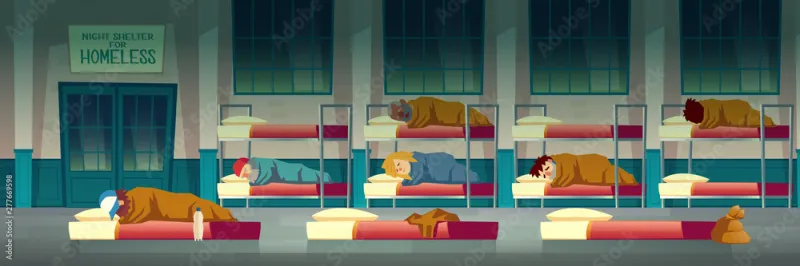

Proteja-se em Caso de Enchente
Encontre informações essenciais para manter você e sua família seguros durante enchentes. Acesse orientações, rotas de evacuação, centros de abrigo e apoio voluntário em momentos críticos.

Título 1
Descrição 1
Título 2
Descrição 2

Título 3
Descrição 3
Monitoramento de Enchentes
Acompanhe em tempo real o status de risco de enchentes em diferentes regiões. Mantenha-se informado e seguro!
Status de Risco por Região
| Região | Status de Risco | Nível | Ações Recomendadas |
|---|---|---|---|
| Porto Alegre | Risco Alto | ❌ | Evacuação Recomendável |
| Canoas | Risco Moderado | ⚠️ | Fique Atento |
| Pelotas | Risco Baixo | ✅ | Nenhuma Ação Necessária |
Atualização automática a cada 30 minutos. Mantenha-se atualizado sobre o status da sua região.